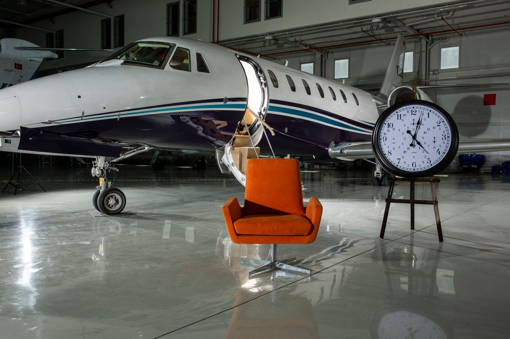
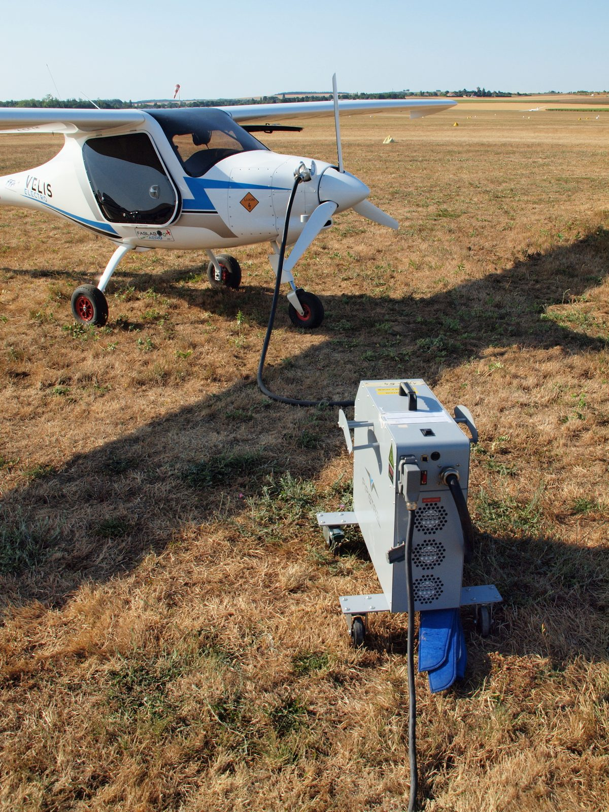
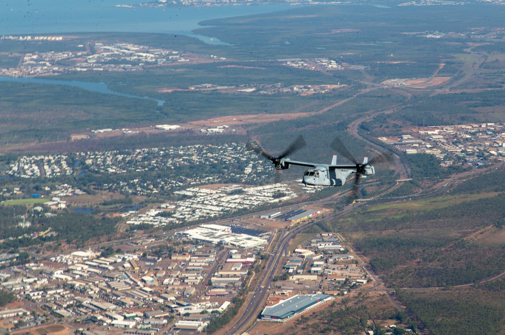
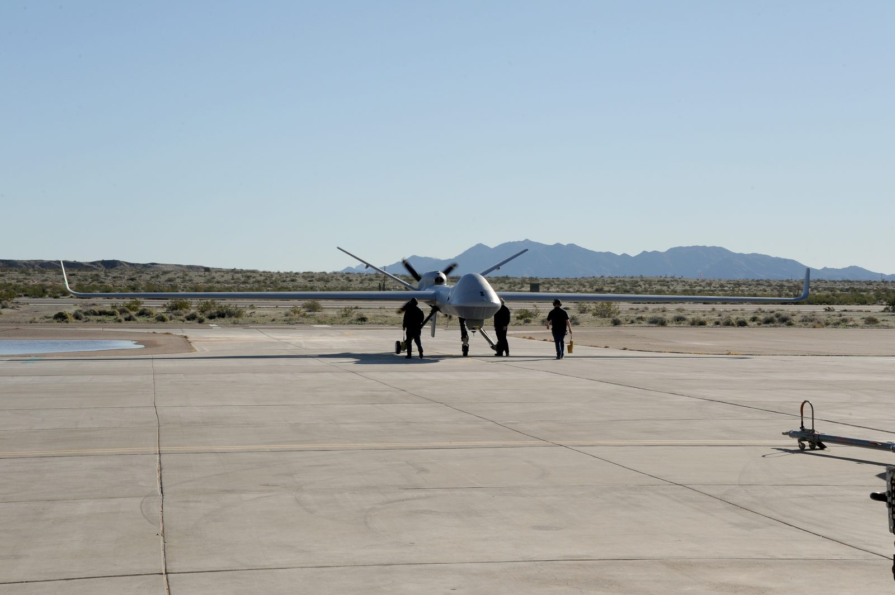
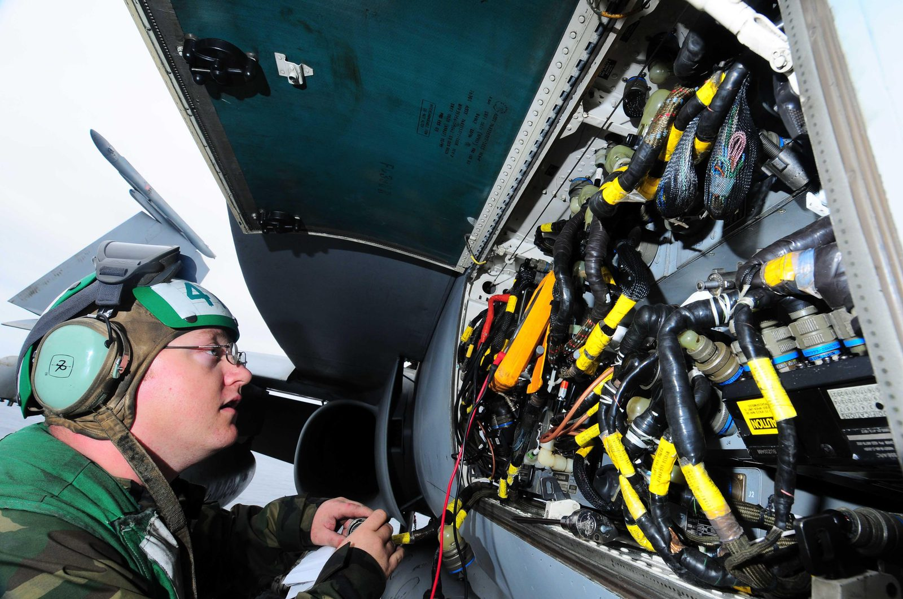

Origin year
Certified Tomorrow / Systems Briefing
Future systems, cleared for operation.
Textron turns frontier programs into fielded machines: electric aircraft, autonomous systems, tiltrotor mobility, and service networks built with certification discipline.
- $14.8B
- 2025 revenue
- 170+
- countries served
- 715K+
- UAS flight hours

Active module
Propulsion
Distributed electric propulsion mapped against thermal margin, charging cadence, and inspection access.
DEP / thermal clearProof strip
100 years of machines entering service.
2025 revenue
Employees
Countries
Service facilities
Mobile service units
Aerosonde UAS flight hours
Innovation narrative
From prototype to certified operation.
The advantage is not only invention. It is the ability to design, manufacture, certify, maintain, and operate across aircraft programs, defense systems, industrial production, and service networks.
01 / Design
Digital engineering tied to factories.
Requirements, open architectures, and supplier constraints are brought into scope early so a concept can become a buildable article, not a detached rendering.
02 / Validate
Flight-test telemetry becomes evidence.
Range activity, sensor payloads, avionics checks, and propulsion data are treated as proof blocks for certification paths and mission readiness.
03 / Support
Service infrastructure keeps capability available.
Parts flow, mobile service, AOG response, LinxUs monitoring, and same-day shipping for in-stock parts turn fielded machines into dependable fleets.
Capability pillars
Air, autonomy, electric, support.

Electric Flight
Nexus eVTOL testing and electric certification lineage.
One pilot, four passengers, distributed electric propulsion, and the operational lineage of the Pipistrel Velis Electro, the first EASA type-certified electric aircraft.

Advanced Lift
Range, speed, and open architecture.
Bell V-280 Valor class capability brings tiltrotor mobility into mission planning with aircraft-scale performance and adaptable systems.

Autonomous Mission Systems
ISR, relay, and payload flexibility.
Aerosonde UAS programs carry 715,000+ field hours across sensing, communications relay, and mission payload adaptation.

Service as Infrastructure
Support networks built into the capability.
Parts, mobile service units, AOG support, LinxUs monitoring, and same-day shipping for in-stock parts sustain availability after delivery.
Operating model
The readiness loop.
Innovation becomes operational capability when every phase feeds the next: design evidence, test discipline, certification logic, deployment readiness, and lifecycle sustainment.
Briefing paths
Choose the briefing path.
Aviation & Fleet Briefing
Aircraft availability, service footprint, parts flow, and fleet transition planning.
Defense / Mission Systems InquiryAdvanced lift, UAS, payload, relay, and mission readiness conversations.
Electric Aviation PartnershipDistributed propulsion, charging cadence, certification path, and operator fit.
Supplier / Engineering ContactManufacturing, certification evidence, engineering inputs, and lifecycle support.
Contact
Bring a future system into scope.
For operators, agencies, partners, and engineers building what comes after the current fleet.